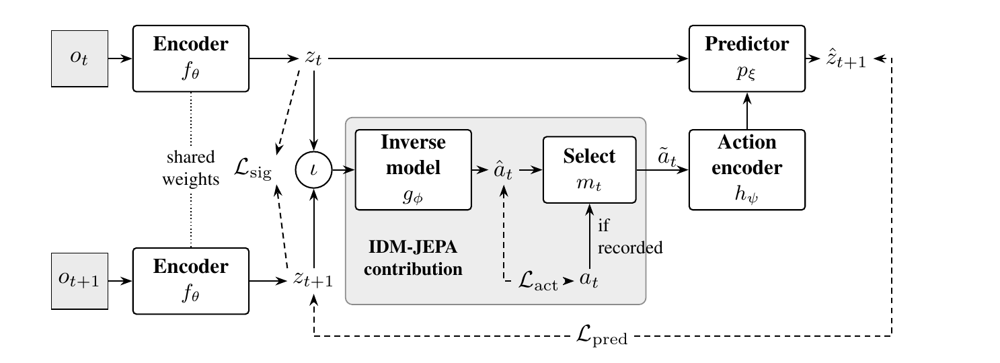

Abstract
Joint Embedding Predictive Architectures (JEPAs) offer a compelling framework for learning world models directly in compact representation spaces. However, existing methods remain dependent on dense, frame-by-frame action supervision, forcing them to discard unlabeled transitions and reducing their ability to leverage action-sparse or passive video datasets.
We introduce IDM-JEPA, a semi-supervised framework that enables stable end-to-end JEPA training on partially labeled data by inferring missing control signals via an Inverse Dynamics Model. By routing inferred latent action codes through the same encoder as ground-truth actions, pseudo-actions and real actions become interchangeable during training and downstream Model Predictive Control (MPC), at no cost to the planner, which searches over recorded actions throughout.
On the continuous PushT benchmark, IDM-JEPA reaches 48.4% planning success from 5% action supervision, against 24.4% for an action-conditioned baseline trained on the labeled fraction alone under a matched budget of gradient steps. The advantage is confined to the extreme-scarcity regime: at an equal step budget the baseline reaches 72.4% at 25% supervision and approaches full-data performance by 50%. Enforcing action-sensitivity through cycle-consistency on imagined transitions does not substitute for grounding codes in recorded ones. Inferred actions substitute for labels only where the unlabeled pool adds state coverage.
TL;DR: IDM-JEPA adds an inverse dynamics model to a JEPA world model so it can train on unlabeled transitions. It doubles PushT planning success when only 5% of actions are labeled, and its benefit fades as labels become plentiful.
Approach

Model architecture. IDM-JEPA builds on LeWorldModel. An encoder maps each frame $\mathbf{o}_t$ to a latent $\mathbf{z}_t$, and a predictor forecasts the next latent from the current one and an action. The one addition is an inverse dynamics model $g_\psi$ that reads two consecutive latents and outputs an action code in the same space as recorded actions. When a transition is labeled, the recorded action is used; otherwise the inferred code takes its place:
Training objective. Everything is trained end to end, with no stop-gradient, EMA or target network. The objective adds an action-alignment term to the LeWorldModel loss, applied only where actions are observed:
$\mathcal{L}_{\text{pred}}$ trains the encoder, predictor and inverse model through the next-latent error; $\mathcal{L}_{\text{sig}}$ prevents representation collapse; $\mathcal{L}_{\text{act}}$ grounds inferred codes in recorded actions using the label mask $m_t$. At $\rho = 1$ this reduces to the action-conditioned baseline; at $\rho = 0$ the action code is ungrounded.
Planning. Because inferred and recorded actions share the same action encoder $h_\omega$, the planner is unchanged: CEM-based MPC searches over real action sequences in latent space, exactly as for a fully supervised model.
Planning with IDM-JEPA
Planning Under Label Scarcity
PushT planning success as the fraction of labeled transitions shrinks.

Planning Results
| $\rho$ | Baseline, epoch 8 | Baseline, matched steps | $\Delta$ | IDM-JEPA (concat) |
|---|---|---|---|---|
| 0.05 | 8.0 ± 0.9 | 24.4 ± 3.8 | +16.4 | 48.4 ± 2.9 |
| 0.25 | 36.4 ± 3.8 | 72.4 ± 2.3 | +36.0 | 79.2 ± 3.3 |
| 0.50 | 65.2 ± 3.6 | 80.8 ± 2.3 | +15.6 | 87.6 ± 1.7 |
| 0.75 | 82.4 ± 1.9 | 82.4 ± 1.3 | 0.0 | 85.2 ± 2.6 |
| 1.00 | 88.0 ± 2.8 | — | 93.6 ± 3.7 | |
The largest gain is at 5% labels, where unlabeled transitions add the most state coverage. At an equal step budget, the baseline catches up quickly from 25% upward, because PushT's unlabeled expert demonstrations largely repeat what the labeled ones already show. Enforcing action-sensitivity through cycle-consistency on imagined transitions (Cycle-JEPA) does not match grounding codes in recorded transitions.
Rollouts
CEM planning on PushT with an IDM-JEPA (concat) model trained with 75% of transitions labeled. Each clip shows the planning agent, the recorded dataset trajectory and the goal pose.
Citation (BibTeX)
@inproceedings{perrier2026idmjepa,
title = {{IDM-JEPA}: Semi-Supervised Action Inference via Inverse Dynamics
in Joint-Embedding Predictive Architectures},
author = {Perrier, Ludovic and Marceau Caron, Ga{\'e}tan},
booktitle = {NeurIPS 2026 Workshop on World Models in Physical AI},
year = {2026}
}